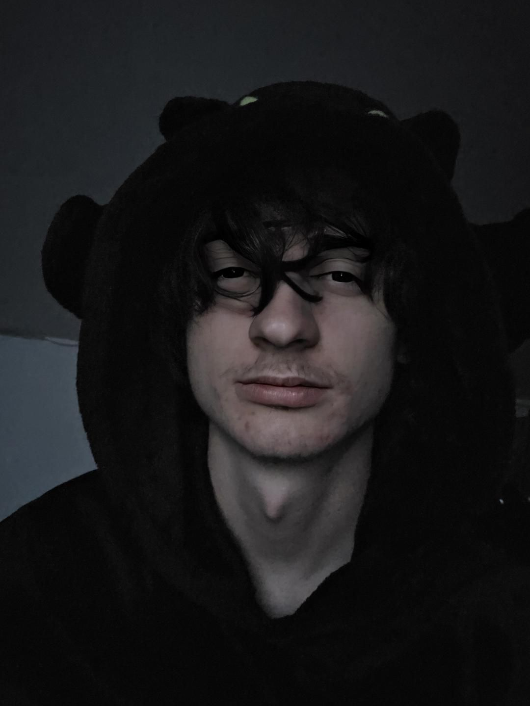
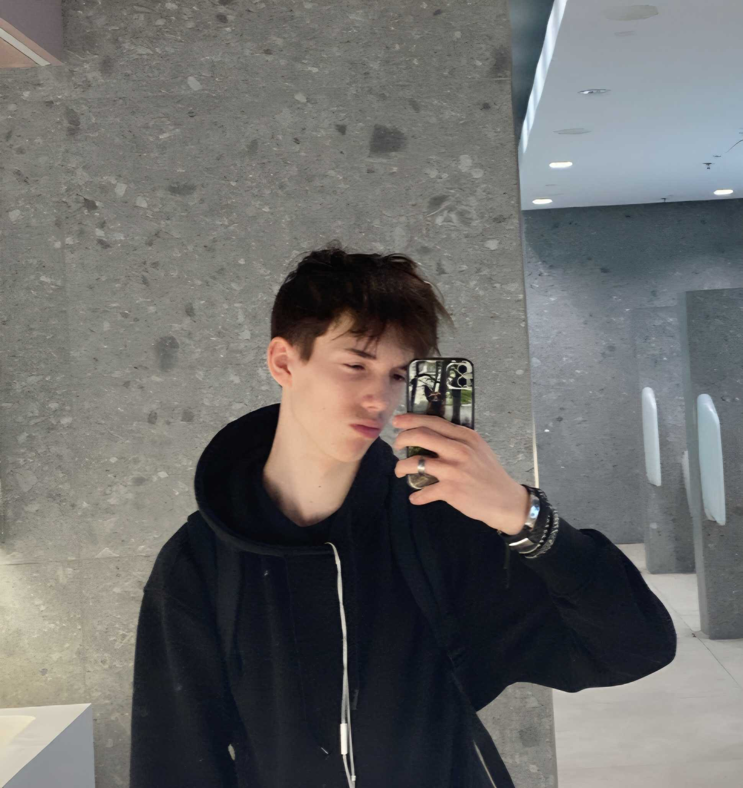

Csapat

Palotai Kristóf
Csapatkapitány
Kristóf a csapatkapitány, szívesen foglalkozik fullstack webfejlesztéssel és felhasználói felületek tervezésével. Szabadidejében alszik és League of Legendsel játszik.

Horváth Bence
Tester
Bence a tesztelésért és hálózati integritásért felelős. Kedvenc elfoglaltsága a hálózatok kiépítése.

Kovács Norbert
Programozó
Norbert a csapat agya. Fullstack tudásával képes összedobni bármilyen oldalt órák alatt. Szabadidejében Valorantozik és a legenda szerint sosem alszik.